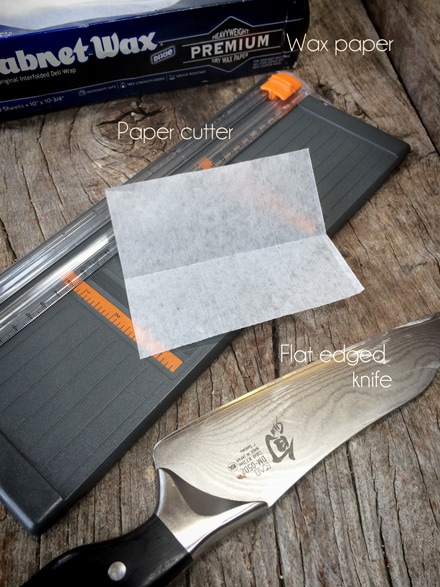
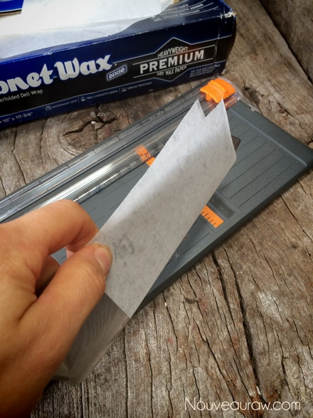

Coconut Mango Cheesecake
~ raw, vegan, gluten-free ~
I love grocery shopping. At our local store, I shop completely on the outskirts of the store. I hit the produce section on one end of the building and then hightail it to the other end for the health food department.
Occasionally, I take a shortcut through the center isles and when I do, I always find myself bewildered. I used to be a box food connoisseur but it has been about 8 years since I felt that way Now all those processed boxed and canned foods seem so alien to me.
Anyway, I sort of got off track there… one area of the store that I like to visit is the bakery. I never buy anything, I just like to take a peek for inspiration, especially how they decorate and present desserts. And over the years, I have always admired those pies that have pieces of paper in between the slices. I always wondered how they got them in there so perfectly.
Then one day I was watching one of my favorite TV shows, Food Factory. I don’t eat many of the foods that they describe on their show but I just love seeing how everything is made. The machinery is so fascinating to me. In one episode, I witnessed a machine that sliced whole cheesecakes and inserted the piece of paper in between slices in one fell swoop. Darn! That’s how they do it? There must be a cheaper, machine-free way to do this… It was my mission to find out how.
Now, adding paper in between slices is optional but can add a nice flair to a cheesecake upon presentation. This is also a great thing to do if you want to make a sampler cheesecake and you are going to present several different flavors in one pie. Below I shared a few photos that explain how to do this process.
This cheesecake is delicate in flavor and complex in texture. The crust is wonderfully crunchy, the chocolate ganache is smooth but firm which pairs beautifully with the luscious, incredibly smooth cheesecake. I didn’t make it very sweet because I didn’t want to overpower the natural sweetness of the mango but be sure to taste test as you go. The sweet level differs from mango to mango so adjust as needed.
Ingredients:
Yields one 9 1/2″ Springform pan
Crust:
Chocolate ganache layer:
- 3/4 cup maple syrup
- 3/4 cup raw cacao powder
- 1/3 cup cold-pressed coconut oil, melted
- 1/8 tsp sea salt
Coconut mango filling:
- 3 cups raw cashews, soaked 2 + hours
- 3/4 cup maple syrup
- 2 cups fresh diced mango
- 1/4 cup water
- 1 Tbsp vanilla extract
- 1/2 tsp liquid stevia
- 1/4 tsp sea salt
- 1 cup raw cold-pressed coconut oil
- 3 Tbsp sunflower lecithin powder
Preparation:
Crust:
- In the food processor, fitted with the “S” blade, combine the coconut flakes, lucuma, and salt. Process until it resembles flour.
- Add the date paste and vanilla and continue processing until the batter sticks together when pressed.
- Line the base of the Springform pan with plastic wrap and press the crust batter into the base nice and even. Set aside.
Ganache:
- In a high-power blender combine the maple syrup, cacao, oil, and salt. Blend until completely smooth.
- Pour over the crust and spread it out evenly.
- Place in the freezer to firm up while you make the filling.
Filling:
- Drain the cashews and discard the soak water.
- In a high-speed blender, combine the cashews, maple syrup, mango, water, vanilla, stevia, and salt. Blend until the batter is smooth. Test this by rubbing the batter between your forefinger and thumb. If you feel any grit, continue the process. This can take up to 5 minutes, depending on the blender.
- With a vortex going in the blender, add the coconut oil and the lecithin, blend until incorporated.
- Pour the filling into the Springform pan. Gently tap the pan on the counter to bring up any air bubbles.
- Chill overnight in the fridge. This can also be made ahead of time and frozen.
- Sprinkle shredded coconut on top.
- Keep in the fridge until ready to serve. Should last 3-5 days. Or can be kept in the freezer for 1-3 months.
- I inserted sliced wax paper in between each slice. See below how.
Supplies needed: wax or parchment paper. I happen to have a box of Kabnet
Wax paper. In one sheet I was able to cut into 8 pieces.
You will need scissors or a paper cutter as seen in the photo. I LOVE this cutter
and use it for everything. The last thing you will need is a straight edge blade
that is flat. This will ensure a nice even cut.

The pie that I made in the photo is a 9 1/2″. So I cut my
papers 5″ long and 4″ wide. I then folded in half on the long bias. You
then place the knife inside the folded piece of paper. The end of the paper
should be all the way up to the tip of the knife. Pinch the paper against
the blade as seen in the photo.

The tip of the knife needs to be all the way up to the center of the pie. It is
best to use a knife that is longer than what the pie slice will be so you can
make just one smooth cut. This technique works best if the pie is half
frozen. Press the knife all the way through the pie and slide the knife out
the edge, leaving the paper in place. That is all there is to it!
© AmieSue.com